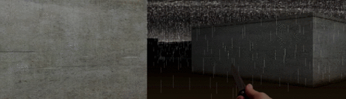

Raycast demo (unfinished)
I had a lot of hope for this one
I felt like I could've done (and really wanted to do) some really cools things with an engine similar to that made popular by games like Wolfenstein 3D, Doom(although not as complex), and various other titles when real 3D rendering was still too taxing on computers.
Games like this featured a similar grid like an RPG but every block on the grid would be a wall in 3D.
Technically it wasn't even 3D, it's 2.5D - it has no true Z-axis.
You can read more about how it works here and here.
Unfortunately, I never made it to the actual 3D looking part of the project.  This raycast engine was built for javascript/HTML5 by someone else on the internet. Their project can be found here.Here's another example of a raycast engine.
Controls
Use A and D to turn.
Hold W to go forward, and S to go backward.